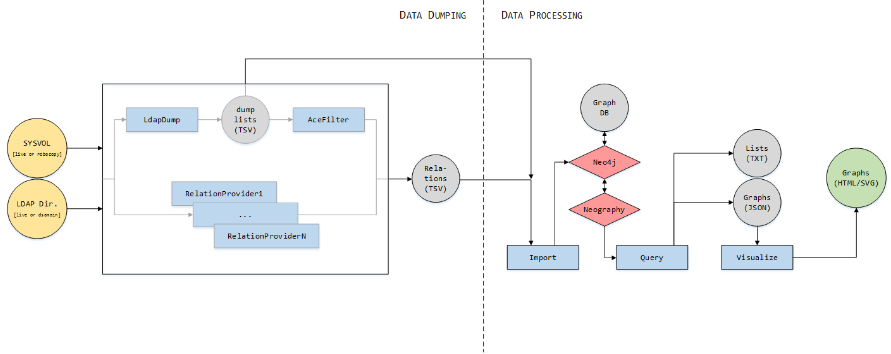

Note: None of these tools need to run on a domain controller.
Generating control paths graphs for your domain takes the 4 following steps:
- Dump data from LDAP directory, SYSVOL and EWS.
- Prepare run analyzers to form control relationships.
- Import these relations into a graph-oriented database (Neo4j).
- Query that database to export various nodes lists, control paths, or create JSON files representing control paths graphs.
- Visualize graphs created from those JSON files.

The 3 last steps are always performed in the same way, but the first step (data dumping) can be carried out in different contexts:
- Live access to the domain, using a simple domain user account.
- Live access to the domain, using a domain administrator account.
- Offline, using a copy of a ntds.dit file and a robocopy of the SYSVOL preserving security attributes.
A simple domain user account is enough to dump a large majority of the control relations, but access to a few LDAP containers and GPO folders on the SYSVOL can be denied. If one is available, an administrator account can thus be used to ensure that no element is inaccessible.
If no access to the domain is given, control graphs can be realized from offline copies of the ntds.dit and SYSVOL:
- A copied ntds.dit file can be re-mounted to expose its directory through LDAP with the dsamain utility (available on a Windows server machine having the AD-DS or AD-LDS role, or with the "Active Directory Domain Services Tools" installed):
- dsamain.exe -allowNonAdminAccess -dbpath <ntds.dit path> -ldapPort 1234
- A robocopy of the SYSVOL share preserving security attributes can be done with the robocopy utility (the destination folder must be on an NTFS volume):
- robocopy.exe \\<DC ip or host>\sysvol\<domain dns name>\Policies <destination path> /W:1 /R:1 /COPY:DATSO /E /TEE /LOG:<logfile.log>
Note: to preserve security attributes on the copied files you need the SeRestorePrivilege on the local computer you're running the robocopy on (that is, you need to run these commands as local administrator). You then need to use the SeBackupPrivilege to process this local robocopy (dumping tools have a use backup privilege option that you must use).